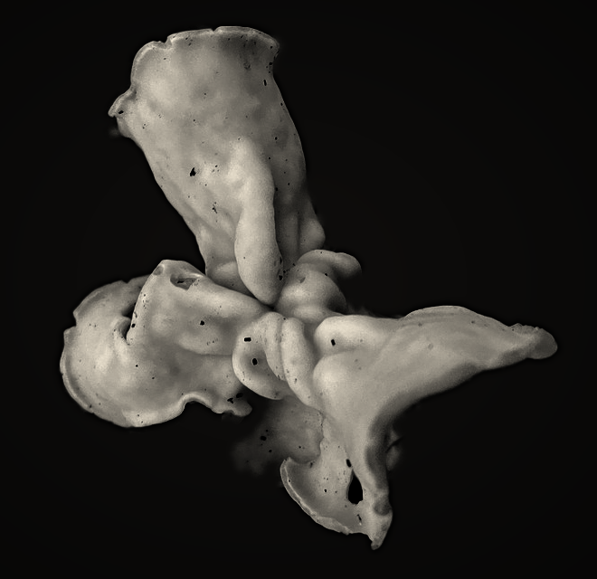

<meta charset=utf-8><meta name=viewport content="width=device-width,initial-scale=1"><title>White Saddle</title>
<style>body{margin:0;background:#0f0e0d;color:#b9b1a4;font:1rem/1.5 Georgia,serif}main{max-width:660px;margin:0 auto;padding:6vh 4vw 10vh}img{width:100%;display:block}p{margin:1.2rem 0 0;font-size:.95rem}</style>
<main>
<p>White Saddle (<i>Helvella crispa</i>). Seen 15 October 2026, Heol Meurig, Swansea, by someone I will not meet. The photograph is theirs; the dark is mine.</p>
<p><a href="index.html" style="color:#b9b1a4">Back</a></p></main>
